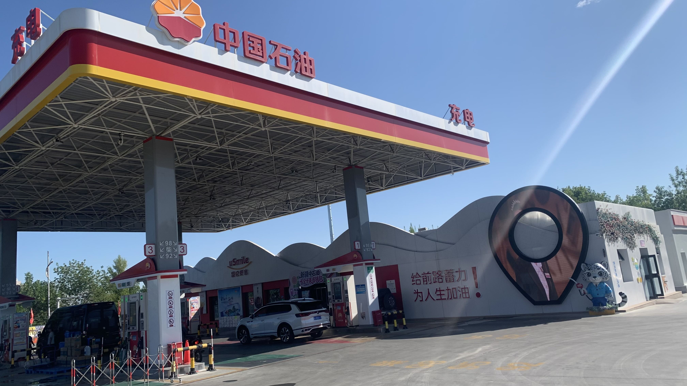
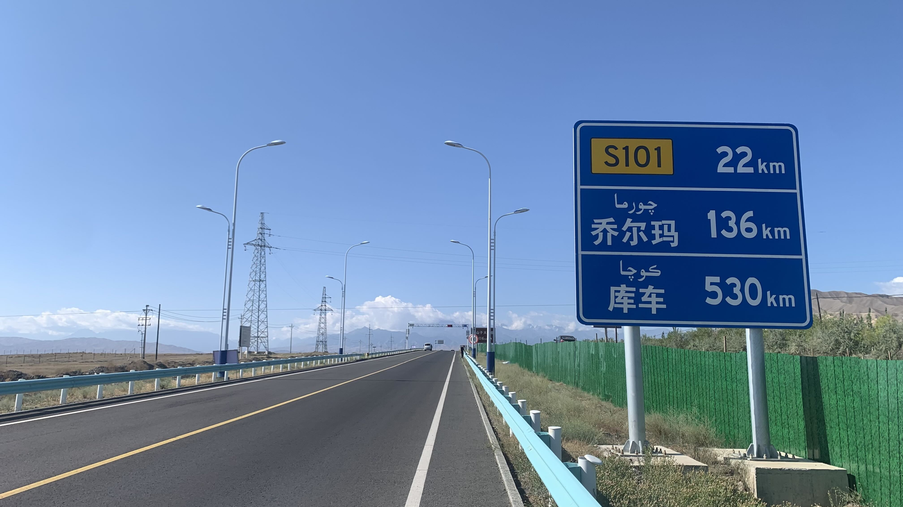
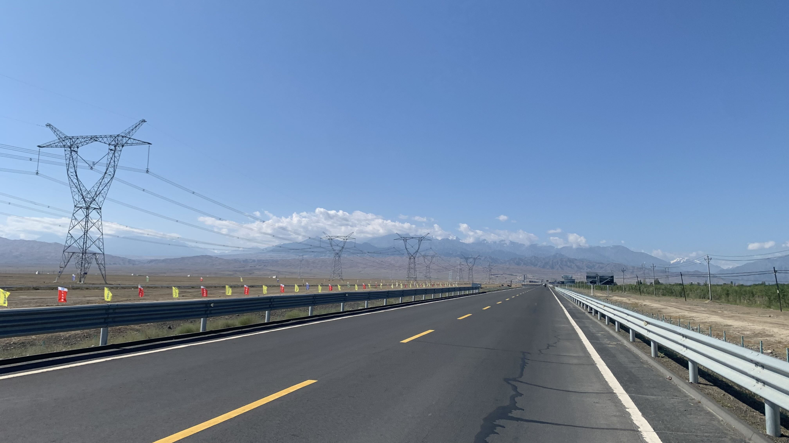
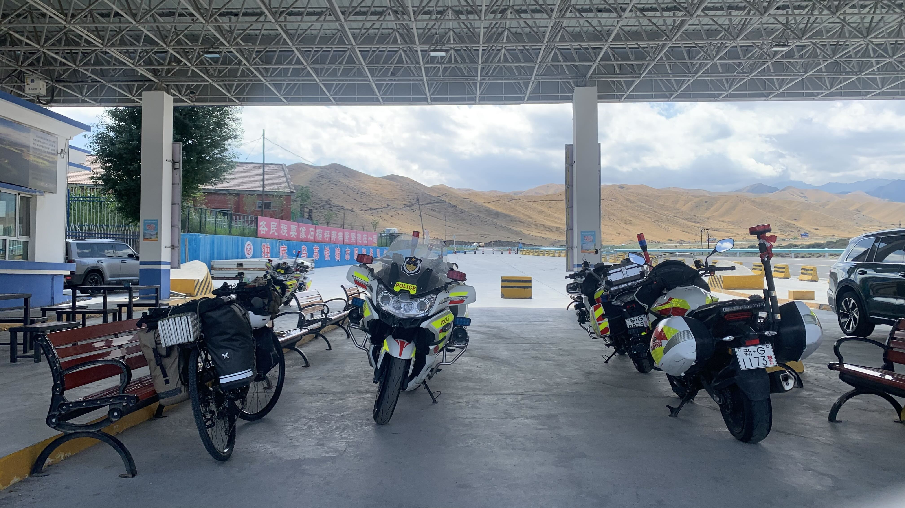
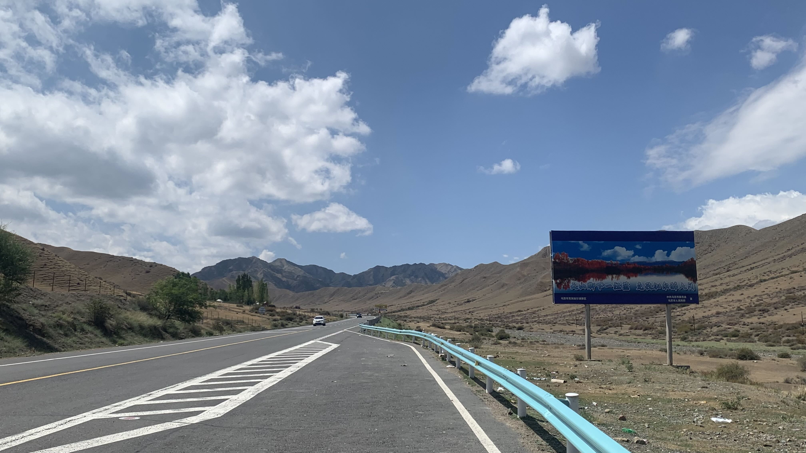

k-Day 145｜獨庫公路（一）被擋住的風景

出發前又繞到附近的中國石油，其實該帶的昨天都買了，但是心裡有點緊張，因此想找個熟悉的地方晃一晃再上山。

上山啦！！！距離庫車530公里！！！

一路都是緩上坡，路面相當平整，有許多騎公路車的當地居民陸續超過我。天氣相當炎熱，車上的可樂和飲水都變得溫熱，尤其是可樂，喝起來像加熱的感冒糖漿味。

踩著上坡沒多久，出現交警站，躲到陰影底下，在販賣機買了一瓶茶和能量飲料。三位抽菸的大叔往我這裡看了幾眼，開口說：「封路了，你上不去。」
「蛤？」
「你要去庫車吧？上面封路了，有石頭掉下來砸到車。」
「沒關係的，我今天也騎不到庫車。」我安心地笑著說。
「從烏蘇驛就封了，就再往前四公里吧。你剛剛看到很多自行車上山吧，他們是不是都沒行李？他們就是練身體，騎上去就下來了。」
「蛤？？？？？？？？？」
事已至此我也不願意再滑回山腳下，就往前看看烏蘇驛是什麼樣的地方吧。

之所以我沒拍什麼路上風景，皆因整路都是這種巨大的廣告看板。這些廣告看板不為別的，就是在廣告獨庫公路的風景。比如這個看板把克孜加爾湖的照片飽和對比拉到最高，搭配「天山腳下一汪藍，克孜加爾醉人間」的文宣。幾乎是每隔五百公尺就一個大牌子擋在我和眼前的風景之間，綿延不絕，堪比遼寧國道上的垃圾帶。實在不解這種行為，走在這條路上的人都已經在這條路上了，天山的風景都在眼前了，究竟因何故要立個看板把風景印在看板上宣傳被它擋在背後的風景，我實在不解。
眼前突然出現烏蘇驛的招牌，路上一個，背後的山上又一個。博物館會在一幅畫前立起一個寫了作品名的立牌擋住作品嗎？會在立牌和畫作旁邊再貼上一個幾乎跟作品一樣大的紅字再寫一次作品名稱嗎？
槽點太多吐不完，整個驛站迴盪著各式電音，飯店有自己的舞曲，像是熱炒一樣的餐廳也有自己的舞曲，跟我一樣被困在這裡只好留下來露營的房車也帶了喇叭放自己的流行歌曲。
謙虛一點不說百分之百，一路上聽到的流行歌曲九成九都是台灣歌手與樂團的歌。即便如此我也不想知道你的歌單是什麼，邊界感在哪裡呢？
將近凌晨，決定把帳篷挪到較遠處。隔壁的房車旅客走過來問我：「你要出發了？」
「你們的音樂太大聲了，我要到那邊。」抓著帳篷和行李，頭往停車場斜坡的暗處指，對方露出尷尬的表情。
今日花費：撫慰糧食 40、販賣機飲料 10、晚餐＋水 63元